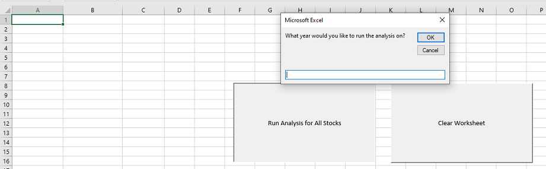
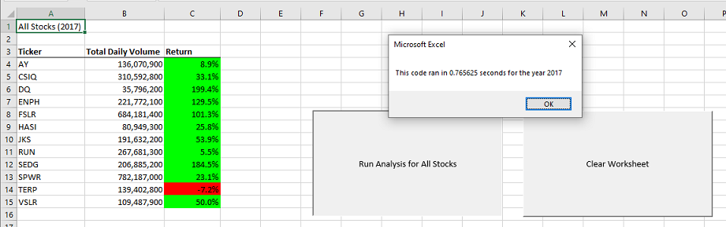
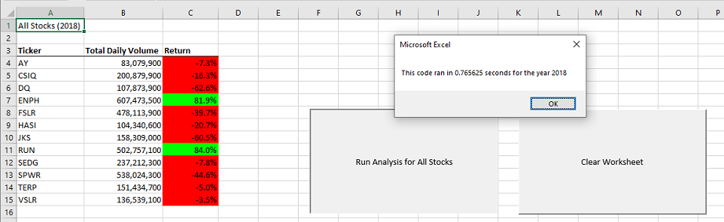
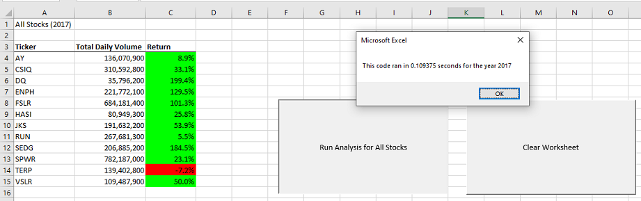
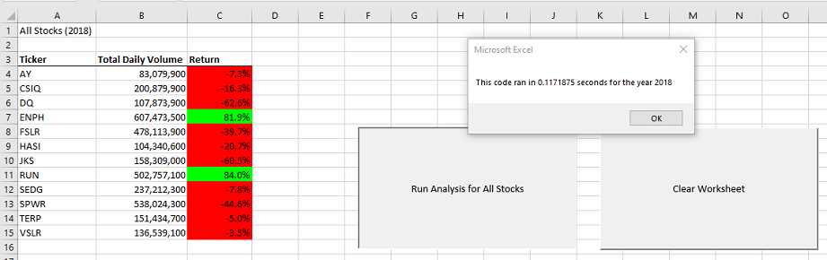

Stock Market
Analysis using VBA
Resources
- Data source: green_stocks.xlsx
- Software: Microsoft Excel Version 2302
Project Objectives
Analyze the Stock data
provided to identify the optimal investment options.
- Using the VBA editor within Excel, create a
sequence of actions, also known as a macro, to calculate the total daily volume and yearly return of all
stocks and assign that macro to a button.
- The button should allow the user to input the
specific year they want to analyze. The time taken for the macro to run should also pop up in a message box
for the user.
- Lastly, create a macro to clear the worksheet
so that the analysis can be rerun without issues.
After the Stock data has been analyzed,
- Refactor the code used for creating the first
button to improve efficiency and logic, and reduce memory usage. The time taken for the new macro to run
should also pop up in a message box for the user so that they can compare execution times between the
original code and the refactored code.
Results & Analysis
Below is the initial view that the user sees when
they click on the “Run Analysis for All Stocks” button. A message box pops up allowing the user to
input which year they want to run the analysis on. In the case of the provided dataset, the user can choose
between the year 2017 or 2018.

For the year 2017, 11 of the 12 stocks in the
dataset were positive, suggesting that they would be good stocks to invest in. The execution time using my
original code was 0.76 seconds.

For the year 2018, 10 of the 12 stocks in the
dataset were negative, suggesting that they would be bad stocks to invest in. The execution time using my
original code was 0.76 seconds.

In the image below, we can see that my refactored
code provides the same results as the original code for the year 2017, but my execution time has improved to
0.10 seconds.

In the image below, we can see that my refactored
code provides the same results as the original code for the year 2018, but my execution time has improved to
0.11 seconds.

In my original code, I called the
Worksheets.Activate method multiple times within the “For Loop”. This was not efficient because each
time it was being called, it caused the worksheet to be deactivated and reactivated, which takes time. I was
able to refactor the code by only activating the data worksheet once at the beginning of the subroutine, and
performing all the necessary operations on that worksheet before moving on to the next step, which helped reduce
the execution time.
Drawing Insights
Advantages of refactoring code include:
- Improved code quality: making it more
readable, maintainable, and modular
- Increased efficiency: faster to execute as
unnecessary or redundant code is removed and optimized
- Easier debugging: easier to locate and fix
bugs since the code is better organized and structured
- Enhanced flexibility: easier to modify or
extend the code as needed
Disadvantages of refactoring code include:
- Time-consuming: refactoring code can be a
time-consuming process, particularly for large or complex data
- Risk of introducing bugs: When making
significant changes to code, there is always a risk of introducing new bugs or errors that were not present
in the original code
- Difficulty in testing: Refactored code may
require additional testing to ensure that it works correctly, which can be time-consuming and costly
- Possible conflicts with other systems: If the
refactored code interacts with other systems or dependencies, there may be compatibility issues or conflicts
that need to be addressed
Regarding the refactored VBA code, it helped
improve efficiency and logic, and reduced memory usage, as seen by the decrease in execution times. It also
introduced some new bugs and errors, such as cells not populating or cells being formatted incorrectly, but I
was able to correct them, ensuring the refactored code ran smoothly and accurately. In general, the benefits of
refactoring often outweigh the drawbacks, as long as the process is carefully planned and executed.
Return to the Homepage